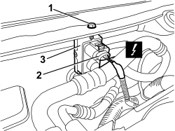
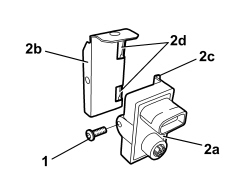

5010D72 AIR QUALITY SENSOR - R.R. FOLLOWING ELECTRICAL CIRCUIT CHECK
- Path
- Procedures > 50 AUXILIARY UNITS > 5010 CLIMATE CONTROL - MISCELLANEOUS > 5010D AIR TEMPERATURE RECORDING SYSTEM > 5010D72 AIR QUALITY SENSOR - R.R. FOLLOWING ELECTRICAL CIRCUIT CHECK
- Kind
- repair procedure (removal / refitting; the operation number is the code)
- Applies to
- all engines; all production periods
- Interactive page
- https://sloeber94.github.io/elrnDB-aBrrSpdr/en/#/946002260
Applies to: all engines; all production periods
 Removing
Removing
 Refitting
RefittingOp. 7025A64 ENGINE COMPARTMENT GASKET - R.R.
1. Release the retaining buttons using the special tool.
Tool | Description | Function | Validity |
|---|---|---|---|
1823015000 | Knife | Retainer removal |
2. Remove the right half trim (2a) releasing the internal retainers (2b).

Applies to: all engines; all production periods
1. Undo the bracket retaining bolt
2. Disconnect the electrical connection.
Description | Component |
|---|---|
EXHAUST GAS SENSOR |
3. Remove the sensor complete with bracket.

Applies to: all engines; all production periods
1. Undo the bolt.
2. Separate the sensor (2a) from the bracket (2b) releasing the retainers (2c) from the housings (2d).

Applies to: all engines; all production periods
Refitting
Removing- Check that the air quality sensor is not damaged.
- Position the air quality sensor on the bracket and attach the retainers.
- Tighten the bolt.
- Place the sensor complete with bracket in position and tighten the fixing bolt.
- Connect the electrical connection.
- Place the right half trim in position and attach the inner retainers.
- Attach the retaining buttons.